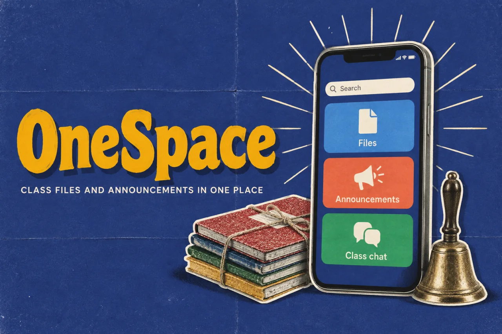

OneSpaceDesign study · 5 min read
Finding a class file should be straightforward.
A research-led communication concept for students and teachers navigating classes, files, and announcements across disconnected apps.
Read the case study

The original screens give files and announcements destinations beyond the conversation stream.
View full size ↗01 The problem
Would putting everything into one app actually solve the problem?
During the shift to online classes, students were being asked to follow different teachers across different communication tools. My starting question was whether bringing communication into one place could make collaboration easier. The more useful question became: how does a student find the right resource when they need it?
Designed for Vivek · student. Retrieve class resources when they are needed.
User context Original research persona
An engineering student attending online classes across tools chosen by different teachers.
- The friction
- Resources scattered across apps, limited phone storage, and difficulty asking for help.
- Design implication
- Give the class and its resources a predictable home.
Example situation · illustrative scenario. Picture a student getting ready for an online class. The conversation is in one app, the link in another, and the assignment somewhere further back. Before learning can begin, there is a search to finish.
02 Research & direction
What the research changed
More than half of the survey respondents were fine with using multiple apps. That changed the question: the stronger opportunity was making class resources easier to retrieve.
Original survey · 127 responses
- 127
- survey responses
- 5+
- one-to-one interviews
- Mobile
- primary prototype
My direction. I organised the concept around a dependable place to return to: the class, its conversations, and the resources attached to it.
More about the original process
I began with more than five one-to-one interviews and a virtual discussion with students from different colleges, then used a ten-question survey answered by 127 people. The interviews exposed an adoption mismatch: teachers chose tools they found comfortable, while students inherited the work of keeping up with all of them.
The survey complicated my original assumption. The deck reports that more than half of respondents did not mind using multiple apps, while about 14% found it frustrating. Interest in an all-in-one tool was therefore a signal to explore, rather than proof that every communication tool needed replacing. I translated the findings into a student persona, four problem areas, information architecture, wireframes, and high-fidelity screens.
- Find the class
A recognisable space becomes the starting point.
- Find the context
Channels keep the conversation attached to its class.
- Retrieve what matters
Files and announcements have their own destinations.
03 Design decisions
Keep class resources easy to find.
Open a decision to see the reasoning and trade-off.
01Organise around a class, then its conversations
The concept uses spaces and categorised channels, with calls accessible from the chat context.
Why this matters. A class provides a recognisable place to return to; students should not have to remember which external app a teacher chose.
The trade-off. This would require institutional participation. A cleaner student interface alone cannot solve fragmented adoption.
02Give files and announcements their own home
I separated a unified file store and an announcements centre from the conversation stream.
Why this matters. These are the items students need to retrieve later. Their usefulness should not depend on scrolling back through chat.
The trade-off. Separating destinations adds navigation; useful defaults and clear links back to the class would be essential.
03Treat access as part of the product scope
The prototype explores language support and preferences alongside the core communication screens.
Why this matters. The interviews describe uneven comfort with technology. Familiar structures and understandable language matter as much as consolidating features.
The trade-off. The deck also explores watch support and parental controls. Today I would defer those until the core retrieval journey had been tested.
04 The outcome
A class, with a place for its resources.
I designed spaces for classes, channels for conversation, and separate places for files and announcements. The prototype covers the wider communication flow, but those two destinations are the part I would carry into a first release. The project stopped at a prototype; usability testing was the next step.
More about the experience
- Retrieve. Files have a searchable destination.
- Notice. Announcements have a separate reading surface.
- Personalise. Preferences remain close to the core experience.
05 Reflection
A useful home for information matters more than an all-in-one promise.
The survey made me question my original all-in-one idea. Being willing to try a new app did not mean students needed every tool replaced. I would start with finding a file and catching an announcement, then test whether those tasks are enough to justify another app.
What I would evaluate next proposed work
- ask students to retrieve an assignment, identify the latest announcement, and join the correct class; compare task success and recovery with their current workflow.
- pilot one class before adding institution-wide migration, parental controls, or a second device. Include teacher setup effort in the evaluation.
A clearer first step towards professional support.